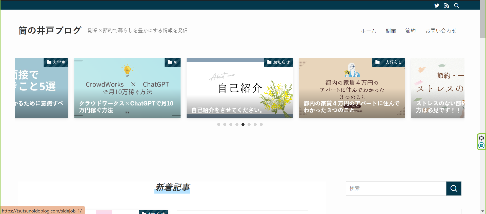

自己紹介
都内の大学に通う21歳の筒の井戸(本名： 筒井学)と申します。
大学1年次の講義で学んだPythonをきっかけに、プログラミングに興味を持ち、HTML、CSS、JavaScript、PHPのWeb言語とPhotoshop、Illustratorなどのデザイン知識を独学で身に着けました。
そして今後は、ITベンチャー企業にインターンをして、ソフトウェア開発、ウェブ開発、モバイルアプリケーション開発などの実務を経験し、自身の技術を伸ばしていきたいと考えています。
また自身のブログを開設して、ライティングやSEOについて勉強しています。
ブログ
筒の井戸ブログという自身のブログサイトを運営しています。
主に、副業と節約に関する情報を発信していて、自身の経験や本などで学んだことをもとに記事を執筆しています。
副業は、Webライターの案件を請け負った経験があります。仕事の内容は、WordPressを用いたブログ記事の執筆や、YouTubeの台本作成をさせいただきました。
節約に関しては、都内の家賃４万円のアパートに住みながら、月の支出を８万以下に抑えています。
また、今後は自身の趣味である読書や旅行、スポーツに関することも発信していく予定です。
これらの経験を活かして、記事を書いています。
影響を受けた人物
マコなり社長
私がプログラミングやブログに挑戦したり、Webライターを始めるきっかけをくれたのは、すべてマコなり社長さんのYouTube動画を見たことがきっかけです。
私は、マコなり社長さんの動画に出会うまでは自分で何かを始めたり、何かに挑戦したりすることはなく、すべて周りの人に合わせて行動を決めるような人間でした。
そんな自分に対して漠然とした不安を抱えながら生きていました。しかし、ある日YouTubeを見ていたら、マコなり社長さんの動画がおすすめに上がって、その動画をきっかけに、勉強の大切さや、自分で行動を起こすことの重要性、継続して努力するべき理由など様々なことを学びました。
今の自分があるのは、間違いなくマコなり社長さんに出会えたからです。